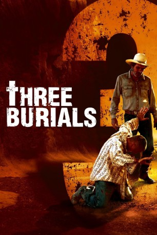
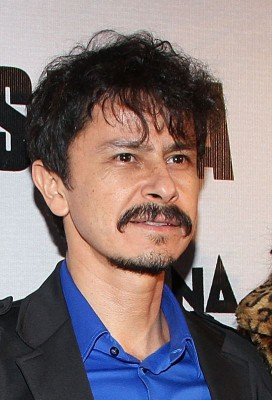

#9823 Three Burials - Die drei Begräbnisse des Melquiades Estrada
Alternativ: Three Burials (Englischer Titel)
 
 IMDB-Wertung: 7.4 / 10
IMDB-Wertung: 7.4 / 10  Metascore: 0
Metascore: 0 
Der Rancharbeiter Melquiades Estrada wird irrtümlich von dem Grenzpolizist Norton erschossen. Die lokale Polizei ist nicht daran interessiert, den Tod des illegalen Einwanderer aufzuklären. Estradas Vorarbeiter und bester Freund Pete Perkins hat dem Mexikaner jedoch versprochen, ihn in dessen Heimat zu beerdigen. Der Cowboy nimmt den Grenzer als Geisel, zwingt ihn Estrada wieder auszugraben und mit ihm und der Leiche nach Mexiko zu reiten. Doch die Grenzpolizei startet eine gnadenlose Hetzjagd auf das Trio.
Jahr: 2005
Dauer: 121 Minuten
FSK: 12
Land: Frankreich Studio: Ascot Elite Home EntertainmentTonspuren: DTS - ,
Untertitel: Deutsch,
Auflösung: 1080p (1920x816) Größe: 15360 MB
Genre: Drama, Abenteuer, Krimi, Western, Mystery
Regisseur:  Tommy Lee Jones
Tommy Lee Jones
Drehbuch: Guillermo Arriaga
Soundtrack: Marco Beltrami
Darsteller:
 Tommy Lee Jones als Pete Perkins
Tommy Lee Jones als Pete Perkins Barry Pepper als Mike Norton
Barry Pepper als Mike Norton- Julio Cesar Cedillo als Melquiades Estrada
 Dwight Yoakam als Belmont
Dwight Yoakam als Belmont January Jones als Lou Ann Norton
January Jones als Lou Ann Norton Melissa Leo als Rachel
Melissa Leo als Rachel Levon Helm als Old Man with Radio
Levon Helm als Old Man with Radio Mel Rodriguez als Captain Gomez
Mel Rodriguez als Captain Gomez- Cecilia Suárez als Rosa
- Ignacio Guadalupe als Lucio
- Vanessa Bauche als Mariana
- Guillermo Arriaga als Juan
 Josh Berry als Border Patrolman
Josh Berry als Border Patrolman- Rodger Boyce als Salesman
- Sonny Carl Davis als Kruger
 Richard Andrew Jones als Bob
Richard Andrew Jones als Bob Juan Gabriel Pareja als Sands Guy #1
Juan Gabriel Pareja als Sands Guy #1 Terry Dale Parks als Neil
Terry Dale Parks als Neil-  Gustavo Sánchez Parra als Tomas
- Brent Smiga als Deputy Antonio
 Spike Spencer als John - Soap Opera
Spike Spencer als John - Soap Opera Barry Tubb als A. L.
Barry Tubb als A. L. Maya Zapata als El Toston Woman #1
Maya Zapata als El Toston Woman #1- Elena Hurst als Lorena (scenes deleted)
- Tiki Davis als Border Patrol Thomas (uncredited)
- Irineo Alvarez als Manuel
- Edwin 'Bubba' Broussard als Bubba
- René Campero als Don Casimiro
- Lupe Campos als Sands Guy #2
- Ariel Castro als Jorge
- Diana Chavez als Woman
- Uriel Chávez als Cowboy #2
- Montserrat de León als El Toston Woman #2
- Jesse De Luna als Miller
- Richard Dillard als Jim
- Jorge Adrián Espíndola als Cowboy #1
- Jourdan Henderson als Mary - Soap Opera Girl
 Sean Hennigan als Chuck
Sean Hennigan als Chuck- Karen Jones als Dog Lady
- Victoria Jones als Immigrant Girl
- Raul Molinar als Radio Announcer #1
- Adrian Navarette als Agustin
- Lonnie Nelson als Gravedigger
- Hugo Pérez als Man
- Paulina Reyes als Piano Player
- Sergio Rodriguez als Radio Announcer #2
- Charles Sanders als Doctor
- Angelina Torres als Adriana
- Guillermo Von Son als Chino
- Robert Barge als Border Patrolman (uncredited)
Datei: X:\HD-Western-2000-2015\Three Burials - Die drei Begräbnisse des Melquiades Estrada (2005, FSK12, 1920x816).mkv seit 29.10.2018
Festplatte: HD Eastern+Western
 Es gibt insgesamt 61 Filme in der Gruppe 'HD-Western-2000-2015'
Es gibt insgesamt 61 Filme in der Gruppe 'HD-Western-2000-2015'